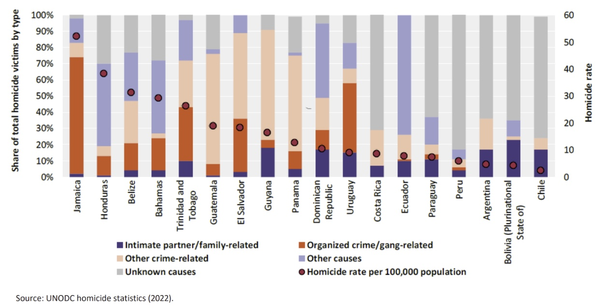

Safety, Race, and Feminist Contradictions in Renca
Background
I recently visited Renca, Chile for a school project about a new metro line coming to the community. I expected this project to center around transit, but shortly upon arrival, I realized transit was only a very small piece of the story.
Renca is a northeastern peripheral community in the greater Santiago area, and has been subjected to a history of stigmatization and disinvestment. Largely due to its location being north of the Mapocho river and away from Santiago proper, the area has faced poverty and little investment for a long time. It exists quite literally on the margins of Santiago.
However, this was reinforced during the Pinochet military coup and dictatorship from 1973-1990. The Pinochet dictatorship undertook a widespread displacement effort in order to homogenize regions by class. During this period, many poorer residents from all over Santiago were forcibly displaced to periphery regions, with Renca being a main receiving municipality for many forcibly displaced people. This further concentrated poverty, and helped create the image of Renca as being a poor, forgotten comuna on the margins of Santiago.
Public narratives of safety Poverty fuels the perception of the comuna being lesser than other neighborhoods of Santiago. This is not a problem unique to Renca - many poorer communities around the world that have faced stigmatization of the entire territory, and through stigmatizing a place, the people attached to such places also face stigmatization via association.
This is a process scholars have come to call “territorial stigmatization,” see writings on the topic. This concept, coined by Lois Wacquant, also acknowledgest these stigmatized communities tend to not only be of lower socio-economic classes, but also tend to see more racially-minoritized residents. Once a place becomes so stigmatized, the prophecy tends to be self-fulfilling: the public or state hear a place is bad or dangerous, and treat it as such. In doing so, communities are less desired locations for investment. Communities with less investments tend to see worse neighborhood conditions, such as inferior infrastructure, fewer public spaces, and less people on their streets. Consequently, stigmatized communities tend to feel less safe.
In Renca, the stigmatization of the community has been very visible. Over a decade ago, the former mayor put up a sign that read, “Renca La Lleva” on the iconic Renca Hills. This roughly translates to “Renca Rocks” or “Renca carries it”, though translations fail to capture the connotations attached to the phrase. The sign was later taken down, and now only reads “Renca”.
When we met with the current and beloved mayor, he spoke about his work to take it down, and how the sign further stigmatized the community. However, it wasn’t until we talked with the community that I realized just how deeply this stigma was felt. It has been nearly a decade since the sign was taken down, but many locals spoke about it with great and fresh embarrassment.
When I spent time outside of Renca in the greater Santiago area, most people I spoke with were baffled as to why we were working in Renca, and some mentioned “Renca La Lleva”. Only then did I fully begin to understand why Renca residents felt such deep humiliation from this phrase, as it had clearly been used to laugh at and denigrate the community.
In these conversations, while some made it clear they didn’t think Renca was a suitable destination to visit, others seemed genuinely concerned about our safety, given the reputation of the community.
Criticism of such narratives & pushback of stigmatization The current mayor is doing a lot to undo years of stigmatization of Renca and change the perception of what image Santiagans’ have of Renca. This is clearly important work. And our team did our best to push back against ideas of stigmatizing the area, and we were critical of rhetoric that Renca is unsafe.
We attributed much of these concerns of rising crime to be related to anti-immigration sentiments due to the recent rise in Venezuelan, Haitian, and Colombian immigrants across Chile. Historically, Chile has not been very racially-diverse, so racial-visibility plays role in othering of new immigrants.
The discourse surrounding this influx of immigrants has been not unlike anti-immigrant sentiments being seen across the United States and many countries in Europe: there are wide-spread concerns immigrants will bring more crime to the country, and a marked rise in nationalistic attitudes.
However, the more we met with Renca residents themselves, we heard more and more about how they were feeling unsafe in their community, to the point it was dictating participation in the community. Concerns about safety were common among women. While not all women were concerned about safety, and some pushed back against ideas that Renca was dangerous, this is where I began to feel conflicted.
Safety and Women in Chile Crime rates overall are lower compared to many other Latin American countries, but a very high proportion of crime in Chile, and violence more broadly, is related to intimate partner, or family-related violence. Women and children are disproportionately represented as victims in these types of violence. On the other hand, men are overwhelming over-represented as the perpetrators of sexual and domestic violence.

At the same time, Chile is home to a very vibrant women’s movement. I arrived just in time for the Women’s march on the March 8th for International Women’s Day and was able to catch the tail end of the festivities. The Santiago streets were filled with women and girls dressed with purple bandannas and carrying feminist signs. I had not seen such a vibrant and enthusiastic participation for a feminist event in the United States or Canadian context.

In Renca, we also noticed how women seemed to be the backbone of the community. Women seemed to lead most community organizations, and seemed highly active in their community. I wondered why the Chilean Women’s movement seemed to have such strong
While some argue this is partly out of state supported women’s organizing , it seemed to be borne out of necessity.
Feminist discourses Coming from a feminist background, the concept of believing women is something extremely important to me. When court cases related to sexual violence or domestic abuse enter the public discourse, such as the Depp v. Heard case, we see women still face barriers to being believed. I was dismayed by the rapid and widespread assumption that Heard’s allegations were false, and how quick the public was to discredit Heard through undermining her character. I was confused - was this some sort of collective amnesia? I thought we had, as a society, learned that there is no such thing as a perfect victim, but even then, and perhaps most importantly then, must we believe victims.
So how can I, as someone who identifies with the feminist movement so adamantly, not wholeheartedly take Renca womens’ concerns of safety as legitimate, when they are telling us they feel unsafe? Shouldn’t their word be enough to take these concerns as legitimate? I certainly think so, but how can this be reconciled with some concerns of safety being tied to anti-immigration (and so often racist) discourse?
How do we reconcile these sometimes opposing ideas? I faced a similar internal dissonance when the “Me Too” movement popularized in 2016, and then “Black Lives Matter” in 2020. The way I understood things, “Me Too” teaches to believe all women, a principle I generally try to live by. However, there is one sticky reality I grapple with: it is well-documented Black men have been falsely-accused of sexual violence by white women throughout history, dating back to the 19th century. Racist conceptions of Black men as sexually dangerous is responsible for extraordinarily violent outcomes for Black men, and this is a problem that is ongoing.
While the context is different, the concerns about safety in Renca are very often connected to race and othering of newcomers. When we spoke with people in Renca, we often heard racism is not the problem in Chile, rather, prejudice stems from classism.
I disagreed with this viewpoint, as race and socio-economic are very difficult to disentangle. Colourism is everywhere, and tied to class across the world.
Many newcomers to Chile come out of necessity, fleeing violence in their home countries or seeking economic opportunity. Given Renca’s reputation and location, most people moving to the comuna move for family or to work. Thus, many immigrants come to work, often in the logistics industry as Renca neighbours the airport. Immigrants are often unable to take higher-paid positions, and end up working lower paid jobs. This further reinforces the stigmatization of new immigrants, associating immigrants, and the communities in which they live, as being poorer and less safe.
Is there a solution? Unfortunately, we have not yet been unable to adequately address racism and xenophobia in public discourse. The same can be said of sexism. While it sometimes appears progress has been made, these systems of oppression are persistent and reproduce in public narratives
I have wondered if an intersectional approach to feminism, and even perceptions of safety, is enough to bridge these divides in discourse. Broadly speaking, intersectionality is a framework that stems from Black legal scholar, Kimberlé Crenshaw, to help explain interactions between different aspects of identity , that is to say people are not a singular identity (see more on her work. For example, Black women experience sexism uniquely from white women, as racism also shapes gendered discrimination.
The standard intersectional framework is useful in many contexts when discussing women’s issues. While there is a wealth of information about how scholars use intersectionality see Cho and colleagues for more academic writing on the topic, there seems to be a lack of applying these ideas to conversations of territorial stigmatization. The closest example of writing on this topic came from a Finnish scholar, Suvi Keskinen. Keskinen links gendered racism of racialized minority youth with territorial stigmatization explicitly.
While I am not sure how to bridge the dissonance between feminism and territorial stigmatization, I think we need a more nuanced conversation about both topics. Linking different forms of oppression, and their critiques, seems to be the only way to fully understand these issues.